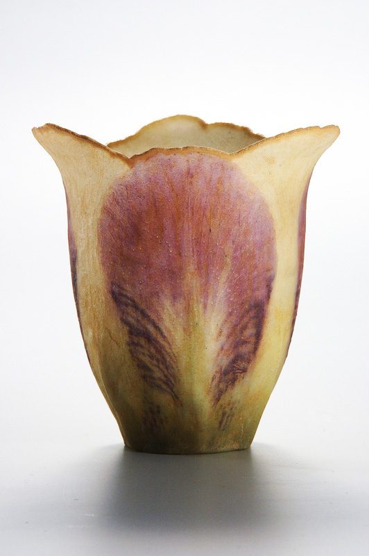

Coupe Iris
Auteur: Albert-Louis Dammouse
Date: 1910
Dimensions: H 8,8 cm
Matériaux: pâte de verre estampée polychrome
Lieu de conservation: Musée des Arts Décoratifs, Paris
© Paris, MAD/Jean Tholance
